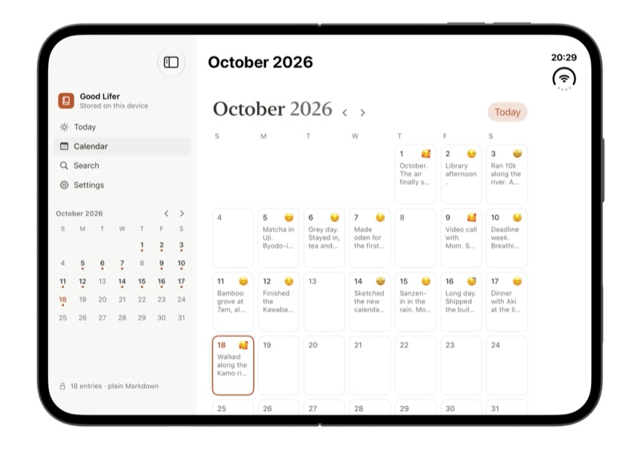
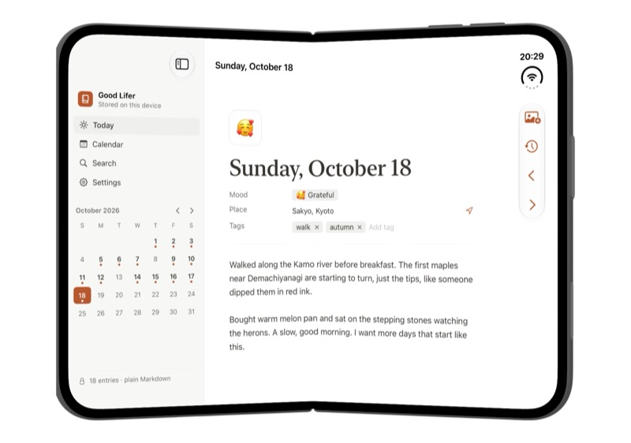
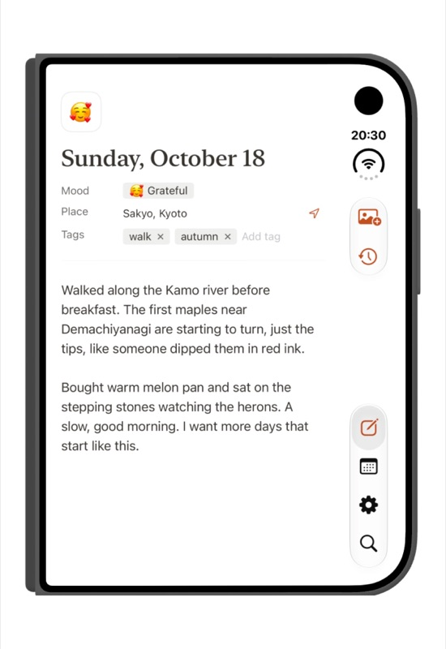

Good Lifer
A calm, private diary for iPhone, iPad and Mac. One page for each day. Your pages stay on your devices.

Ready for iPhone Duo
Unfold it and the month calendar sits beside the day page, like an open book. Folded, it works fully on the outer screen.



What it does
- One page per dayOpen the app and today's page is ready. Add a mood, a place and tags, then just write.
- CalendarSee your month at a glance, with each day's mood and first line.
- iPhone, iPad and MacA native app on each device. With Good Lifer Pro, your diary syncs through your own iCloud Drive.
- Plain files you ownEvery day is a normal Markdown file, on your device or in a "Good Lifer" folder in iCloud Drive. Open it in Files or Finder, back it up, or take it anywhere.
- Private by designNo account, no ads, no tracking. We never see your diary.
Support
Questions, problems or ideas? Please open an issue at github.com/bingq/good-lifer/issues. I read every one. For anything private, email geldqb@gmail.com.
Where are my entries stored?
On your device, as plain files you can see in the Files app or Finder. With Good Lifer Pro and iCloud Drive on, they live in a folder called Good Lifer in your iCloud Drive instead, private to your Apple account.
How do I sync between iPhone and Mac?
Syncing is part of Good Lifer Pro, a one-time purchase that works on all your devices. Use the same Apple account with iCloud Drive turned on, and entries written on one device appear on the others a few moments later. If you wrote on several devices before, everything is merged and nothing is lost.
What happens if I edit the same day on two devices?
Nothing is lost. If both versions changed while offline, Good Lifer keeps both, separated by a line, so you can tidy them up.
How do I back up my diary?
Your entries are ordinary files. Copy the Good Lifer folder from the Files app, Finder or iCloud Drive anywhere you like.
I used the earlier version of Good Lifer. What changed?
Version 1.0 is a complete redesign: Good Lifer is now a diary for iPhone, iPad and Mac. Data from the earlier achievement-tracking version isn't carried over.
If there's anything you want to keep, open the earlier version before updating and take screenshots of your Stats and Projects screens.
Privacy
Good Lifer collects no data. Read the full privacy policy.